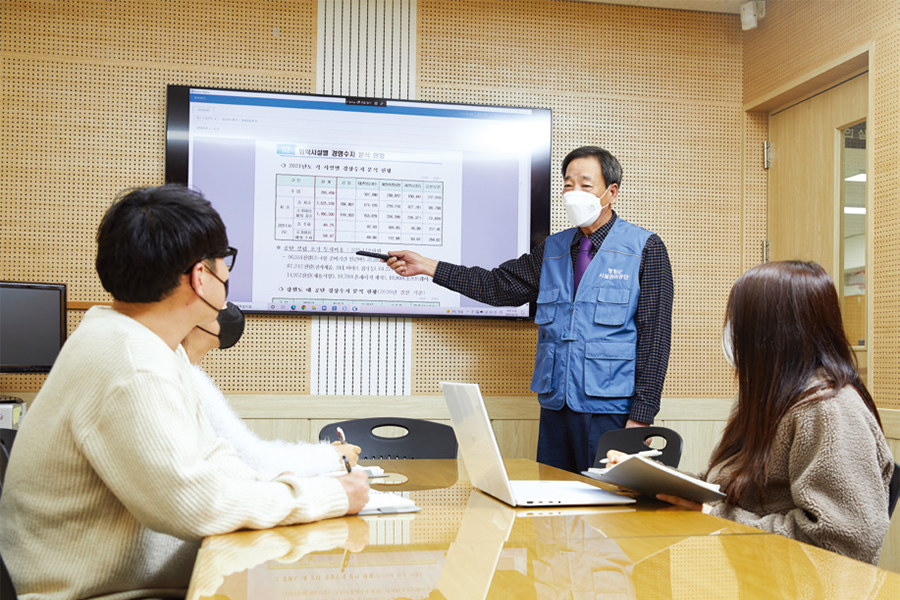
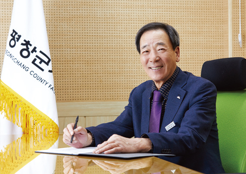
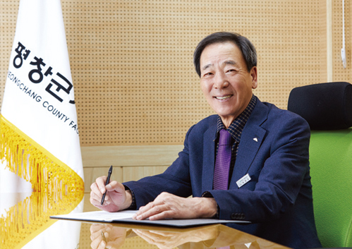

●
평창군시설관리공단(이하 공단)을 설립한 배경과 계기 등이 궁금합니다.
평창군은 주민과 관광객의 다양한 문화 및 여가생활에 대한 수요와 니즈가 대폭 커짐에 따라 문화·관광시설들이 지속적으로 증가하게 되었습니다. 특히 공공시설에 대한 기존의 운영 방식은 관리 주체의 비전문성, 지자체의 업무 과중, 민간수탁자의 재정 불건전성 등의 한계가 나타났고, 주민과 관광객들의 공공시설에 대한 각종 개선 요구와 변화에 신속한 대처가 어려운 구조로 운영되어 왔습니다.
●
공단의 설립 과정과 설립 당시의 상황 등은 어떠했는지요.
공단을 설립하기까지는 지방공기업평가원, 광역자치단체, 지방의회 등 여러 기관의 각종 심의와 심사를 통과해야만 합니다. 그 과정에서 위탁대상 시설 수가 적고 설립 규모가 작으므로 시설 규모를 더 크게 만든 후에 공단 설립을 추진하는 것이 어떠냐는 의견이 많아 심의 과정이 순탄치만은 않았습니다.
그럼에도 ‘시작은 미약하지만 나중은 창대하리라.’라는 유명한 성경구절처럼 오히려 공단 설립 시 규모가 작을수록 더 내실 있고 탄탄한 공단으로 시작할 수 있고, 설립 초기 빠르게 조직의 안정을 추구할 수 있으며, 안정된 기반을 바탕으로 향후 위탁시설 증가에 차분히 대비할 수 있다는 점을 강조했습니다. 그렇게 설득함으로써 여러 가지 어려움 속에서도 공단 출범이 이루어질 수 있었습니다.
●
공단의 조직과 구성원은 어떻게 구성되어 있는지요.
우리 공단은 2022년 2월 기준으로 이사장 이하 총 4개 팀(경영지원팀, 문화관광사업팀, 시설운영관리팀, 시설지원TF팀)으로 구성되어 있으며, 이사장 1명, 비상임 임원 4명의 임원진과 총 27명의 직원이 함께 근무하고 있습니다.
●
공단의 주요 시설 및 주요 사업은 무엇인가요.
우리 공단은 현재 총 4개의 시설을 운영하고 있습니다. 우선 전국구 캠핑장으로 도약하고 있는 계방산 캠핑장은 오토 캠핑과 카라반 사이트 90개, 차박 사이트 14개, 펜션 4동을 운영하고 있습니다.
백두대간의 중간지점에 위치한 명산 계방산 기슭에 자리한 오토캠핑장은 골이 깊어 물 맑기로 유명한 노동계곡을 품고 있어 천혜의 자연조건을 두루 갖추고 있는 자연휴양지입니다.
겨울 산행으로 유명한 태기산 자락에 있는 평창자연휴양림은 숲속체험관 12객실과 카라반 2동을 운영하고 있으며, 숲속에서 휴식과 힐링을 추구하는 관광객이 많이 찾는 곳입니다. 특히 이 휴양림은 소설 <메밀꽃 필 무렵>의 배경인 평창군 봉평면에 위치하여 연계 관광으로 각광받는 곳이기도 합니다.
올해에는 더 많은 관광객이 평창자연휴양림을 다녀갈 수 있도록 경관형 테마 숙박시설을 추가로 조성할 계획도 가지고 있습니다. 이외에도 눈 쌓인 겨울 여행지와 열대야가 없는, 여름 피서지인 대관령에 위치한 (구)대관령휴게소와 평창공설묘원 관리 사업을 수행하고 있습니다.
그동안 천혜의 자연을 품은 관광지이고 인프라가 잘 갖춰져 있음에도 관광객 유치에 소극적이었다면 관광시설에 대한 적극적인 마케팅과 다양한 이벤트를 통해 관광객을 기다리지 않고 먼저 다가가는 전략으로 운영방식을 개선할 것입니다.
●
현재 평창군 공공시설물의 인프라와 현황은 어떤지요.
평창군은 연간 천만 명의 관광객이 방문하는 대표적인 관광도시로서 관광 인프라가 잘 갖춰져 있으며, 그만큼 관광객 유치와 편의 제공을 위한 공공시설도 많이 확충되었습니다. 그동안은 이러한 공공시설의 외연적 확장이 주를 이루었다면, 앞으로는 조성된 공공시설의 내실을 다지는 일에 중점을 둘 계획입니다.
그러기 위해서는 전문적이고 체계적인 관리와 경영수지 개선에 대한 노력이 필요합니다. 공공시설을 지자체에서 직영으로 운영할 경우에는 수익적 측면에 대한 고려가 부족하여 경영수지 개선에 소홀해지는 등의 문제점이 있고, 민간위탁의 경우에는 관리 소홀로 인한 공공시설의 노후화가 빠르게 진행되는 등의 문제점이 발생하고 있습니다.
이와 같은 문제점을 해결하고 개선해 나가기 위해서는 공공성과 수익성을 조화롭게 추구하고 안정적인 경영수지 개선을 주도할 수 있는 우리 공단으로의 추가적인 공공시설 위탁이 이루어져야 할 것입니다. 현재 평창군과 6개 시설 즉, 평창·진부장례식장, 평창 국민여가캠핑장, 광천선굴 어드벤처테마파크, 평창행복주택, 쓰레기종량제봉투 제작, 판매 사업 등의 추가적인 위탁 운영을 위한 협의를 진행해 가고 있습니다.
●
남은 임기 내에 꼭 이루고 싶은 과업이 있다면 무엇인가요.
현재 강원도 내 6개 공단 중 우리 공단을 비롯하여 5개 공단은 경영수지 비율이 50% 이하입니다. 우리 공단의 경우 경영수지 구조를 분석해 본 결과 관리시설 대비 기본적인 인력 투입은 지속적으로 유지해야 하지만, 주요 수익사업은 여름철 시즌의 한시적인 계절 영업이 주를 이룬다는 것입니다.
따라서 직원들의 아이디어 도출과 지속적인 타 지자체와 공단의 시설 견학을 통한 사계절 활성화 방안을 강구하고, 국·도·군비 등 시설 확장과 보수를 위한 예산을 지속적으로 확보하여 최고의 시설로 만들어가고, 효율적인 인력 운영을 통하여 임기 내에 경영수지 비율 100% 달성을 목표로 추진해 나갈 계획입니다.
●
주요 관광시설인 계방산오토캠핑장과 자연휴양림은 코로나19 확산에도 지난해 말까지 약 3만 명의 관광객이 방문하는 등 큰 성과를 거둔 것으로 알고 있습니다.
작년 4월 평창군시설관리공단 이사장으로 취임한 후 힘을 쏟은 일은 노후시설 파악과 개선 등 노후보수사업에 주력한 것입니다. 그간 공공시설에 대한 관리 미흡으로 유지보수가 적기에 이루어지지 않아 시설 관리상의 문제점이 있었는데, 노후한 시설들을 대대적으로 수리하면서 관광객들에게 더 나은 쾌적한 환경을 제공할 수 있었습니다.
자연휴양림의 경우 온돌방만으로 이루어진 객실의 50%는 침대를 설치함으로써 객실의 차별화를 추진했고, 계방산오토캠핑장에는 최신 트렌드에 발맞춰 차박 캠핑장을 추가로 조성하는 등 경영수지 개선을 위한 임직원의 열정과 노력이 좋은 성과를 거둘 수 있었던 주요한 이유라고 생각합니다.
무엇보다 계방산오토캠핑장과 평창자연휴양림은 산과 계곡 등 천혜의 자연환경을 품은 아름다운 자연휴양지이고 평창의 대표적인 관광지입니다. 한번 방문해 보면 “아! 정말 좋다.”라는 말이 저절로 나올 정도로 자연적인 입지 조건을 갖추고 있는데, 그럼에도 이런 장소가 있다는 것 자체를 모르는 사람들이 너무 많다는 것을 알게 되었습니다. 그동안 적극적으로 관광객을 유치하기보다는 찾아오는 관광객만을 상대하는 소극적인 시설 운영에 그쳤기 때문입니다.
그래서 소문을 내기 시작했습니다. 온·오프라인에서 최대한 많은 사람에게 알리기 위해 마케팅을 실시한 결과, 인터넷상에 많은 리뷰들이 올라오기 시작하였고, 특히 찾아주신 관광객들의 개인 SNS를 통한 확산이 큰 역할을 했다고 생각합니다.
●
공익적·경제적 가치를 추구하면서 공공서비스를 제고시켜 나가기 위해 강구하고 있는 공단만의 노하우나 전략 등이 있다면 무엇인가요.
공단 운영의 기본 원칙은 기존에 각 공공시설이 담당하고 있는 공익적 가치는 약화시키거나 훼손하지 않으면서 경제적 가치의 개선을 추구해야 한다는 것입니다. 그러기 위해서는 고객의 요구와 사회적 환경 변화에 신속히 대처할 수 있는 조직으로 변화해야 합니다.
먼저, 내부의 소리에 귀 기울이는 조직으로 거듭나기 위하여 형식에 구애받지 않은 공모와 제안 제도를 운영하고 있으며, 근로자 대표를 이사회의 일원으로 받아들이는 노동이사제를 도입하여 노사 상생의 협력 관계를 구축해 나갈 것입니다.
또한 고객을 1회성 거래 상대방이 아닌 장기적인 파트너로 바라보고 관계를 이어가는 전략을 추진해 나가고 있습니다. 온·오프라인에서 제기되는 민원사항 및 고객의 소리에 대한 주기적인 모니터링과 피드백을 통하여 고객의 다양한 수요에 빠르게 대응하고 있습니다. 현재에 만족하지 않고 끊임없이 새로운 수익원을 발굴하여 경제적 가치를 창출하는 전문공기업으로 성장할 것입니다.
작년에는 계방산오토캠핑장 내 유휴 부지를 찾아내어 3천여만 원의 예산을 들여 14개의 차박 사이트를 신설했습니다. 이를 통해 6개월 만에 3천여만 원의 수익을 창출하는 작은 성과도 있었으며, 올해에는 자연휴양림과 계방산오토캠핑장에 경관형 테마 숙박공간을 추가로 조성하여 수익구조 개선에 박차를 가할 예정입니다.
●
전문 역량을 갖춘 행정전문가로서 이사장님만의 경영 전략이나 경영 방침은 무엇인지 궁금합니다.
공직자로서 또 강원도의회 의원으로서 지난 44년간의 행정과 의정 경험은 참으로 소중한 시간이었습니다. 40년간의 공직생활 중 제가 담당한 부서는 모든 평가에서 계속 1등을 차지했으며, 모든 공직자가 뽑은 베스트 공무원으로 선발되기도 했습니다.
또한 의정 생활 중 우수 의원으로 선발되는 평가를 받은 것은 모든 일을 뜨거운 열정으로, 법과 원칙을 지키는 투명한 행정으로 직원들의 화합을 이끌어낸 결과 국민에게 신뢰를 받았다는 자부심을 갖고 있습니다.
공단의 경영에서도 직원들의 화합을 유도하고 에너지를 도출시키며 원칙을 중시하는 투명한 경영으로 고객에게 신뢰받는 1등 공기업으로 만들어가겠다는 것이 제 경영 원칙이고 방침입니다. 앞으로도 이 원칙과 신념을 직원들과 함께 공유하며 공단이 자리매김할 수 있도록 노력할 것입니다.
●
코로나19 위기 극복과 지역사회 확산 방지를 위해 공단이 시행하거나 추진하고 있는 내용이 있다면 소개해 주세요.
코로나19 사태의 장기화로 인해 지역 농민, 소상공인의 피해가 큰 만큼 지역사회와의 상생을 위하여 많은 노력을 기울였습니다. 가장 많은 고객이 찾아오는 여름철에는 계방산오토캠핑장과 평창자연휴양림에서 지역 농가에서 생산하는 감자, 옥수수 등 우수 농산물을 구매하여 고객과 나눔 이벤트를 진행함으로써 농산물의 직접 구매 및 농산물에 대한 홍보를 통해 농가의 판로 확장에 기여함은 물론, 농가와 관광객 사이의 가교 역할을 수행하기도 했습니다.
또한 가을에는 일손이 부족하여 어려움을 겪고 있는 영세 농가를 방문하여 일손을 거들기도 하였으며, 명절을 맞이하여 전통시장 활성화를 위한 임직원 장보기를 시행하는 등 지역사회와 함께하는 공기업으로서의 역할을 수행하고 있습니다.
그 외에도 코로나19 방역의 최전선에서 고생하는 평창군 백신접종센터를 찾아 위문품을 전달하였고, 방역물품을 구입하여 배포함으로써 코로나19 바이러스 감염 차단을 위하여 노력해 왔습니다.

●
지방공공기관의 전문성과 공공성, 조직 역량 강화 등과 관련해 공단만의 강점을 꼽는다면 어떤 것이 있을까요?
우리 공단은 이제 갓 설립한 신생 공기업이다 보니 아직은 전문성과 역량이 다소 부족한 측면도 있습니다. 따라서 조직의 전문성과 구성원의 역량 강화를 위한 교육과 타 공단 시설 견학 등에 예산과 시간을 아낌없이 투자하고 있습니다.
임직원의 역량 강화를 위한 각종 교육비 및 자격증 취득을 위한 학습비 투자나 현지 견학에 필요한 예산 등을 적극적으로 지원하고 있습니다.
●
향후 공단의 계획 및 목표는 무엇인가요.
우리 공단은 고객의 신뢰와 만족을 이끌어내는 First-class 공기업으로의 도약을 비전으로 내세우고 있습니다. 비행기의 일등석처럼 수준 높은 서비스를 제공하고 공공시설물의 효율적인 관리를 통해 주민과 고객의 신뢰를 바탕으로 1등급 공기업이 되고자 하는 포부를 담고 있습니다.
이를 위해 ‘혁신성장’, ‘상생과 소통’, ‘청렴과 안전’을 핵심 가치로, ‘변화와 혁신으로 지속가능한 경쟁력 확보’, ‘고객 감동의 사회적 가치 실현’, ‘부정부패 및 안전사고 ZERO’를 중점 과제로 선정하고 모든 임직원이 목표 달성을 위해 전력을 다할 것입니다.
●
마지막으로 지방공기업 관계자와 독자분들께 한 말씀 부탁드리겠습니다.
평창군 시설관리공단은 지금까지 헤쳐나간 일들보다 앞으로 헤쳐나가야 할 과제들이 더 많은 신생 공기업입니다. 신생공기업인 만큼 아직은 경험과 노하우가 축적되지 않아 어려움도 겪겠지만 조직의 높은 유연성을 바탕으로 변화와 혁신에 빠르게 대처해 가고, 전 국민에게 사랑받는 최고의 시설관리공단이 되도록 노력하겠습니다.
지방공기업 관계자 및 독자 여러분의 많은 관심과 격려를 부탁드립니다.
평창군시설관리공단
설립일: 2021년 4월
대표자명: 박현창
직원 수: 27명(2022. 3월 기준)
주소: 강원도 평창군 평창읍 종부로 69-27(종합운동장)
전화: 033-339-9005
홈페이지: www.pcfmc.or.kr
사업: 평창·진부장례식장, 평창 국민여가캠핑장,광천선굴 어드벤처테마파크, 평창행복주택,쓰레기종량제봉투 제작, 판매 사업 등
평창군시설관리공단 연혁
2021. 04. 01.
평창군시설관리공단 출범
2021. 02. 15.
평창군시설관리공단 법인 설립
2020. 11. 06.
평창군 시설관리공단 설립 및 운영에 관한 조례 공포
2020. 07. 23.
평창군 시설관리공단 설립 주민공청회 개최
2019. 09.~2020. 07.
설립 타당성 기초조사 용역 및 타당성 검토 용역
박현창 평창군시설관리공단 이사장은?
박현창 초대 이사장은 40여 년간 평창군 공무원으로 재직했고, 제9대 강원도의회의원을 역임하는 등 전문성과 역량을 갖춘 행정전문가로서 인정받고 있다. 풍부한 공직생활과 도의원 활동 경험 등을 바탕으로 군민과 평창을 찾은 국민에게 양질의 공공서비스를 제공하기 위해 노력하고 있다.
박현창 평창군시설관리공단 이사장
“공단 설립 후 짧은 시간 동안 시설 개선과 보수, 그리고 안전 확보를 중점으로 노후보수사업에 힘을 쏟았습니다. 관광시설에 대한 적극적인 마케팅과 다양한 이벤트를 통해 관광객을 기다리지 않고 먼저 다가가겠습니다. 올해 임인년은 공단이 보다 역동적인 변화를 맞는 새로운 한 해가 될 것입니다. 평창군을 찾아주시는 많은 고객과 주민의 목소리를 귀담아 듣고 고객 만족 경영을 통해 신뢰받는 최고의 지방공기업으로 도약해 나가겠습니다.”
 
